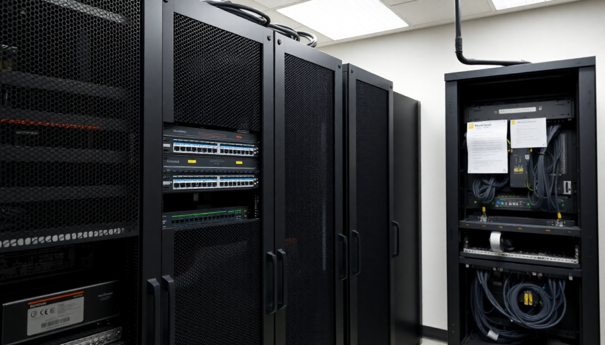
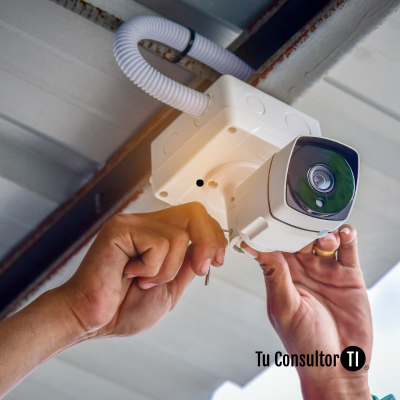
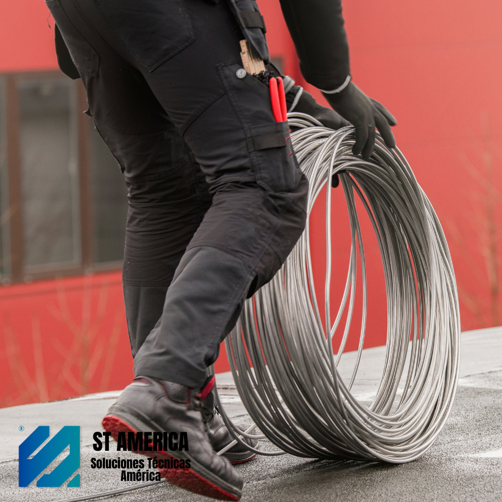
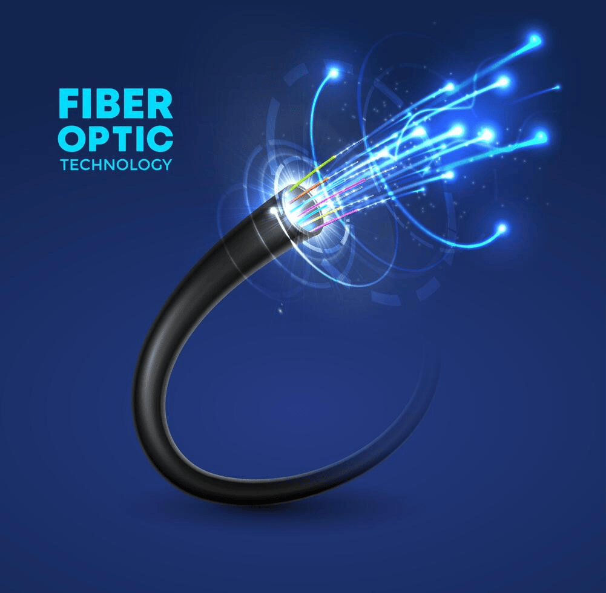
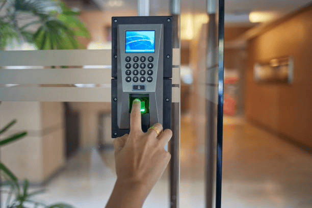

Tecnología que Implementamos

Soluciones integrales para empresas y organizaciones. Infraestructura de redes, videovigilancia, control de acceso, cableado estructurado y soporte especializado.
Diseñamos, implementamos y mantenemos soluciones tecnológicas para empresas, industrias y organizaciones que requieren infraestructura confiable, conectividad eficiente y sistemas de seguridad de última generación.
Brindar soluciones tecnológicas innovadoras que mejoren la conectividad y seguridad de nuestros clientes.
Ser una empresa referente en tecnología, conectividad y seguridad a nivel regional.
Redes LAN, WAN, WiFi Empresarial, Fibra Óptica y Cableado Estructurado.
CCTV, Alarmas, Monitoreo, Control de Acceso y Protección Perimetral.
Mantenimiento preventivo, correctivo y asistencia especializada.
Soluciones adaptadas a cada cliente y necesidad.
Equipamiento de última generación.
Atención técnica especializada y seguimiento.
Proyectos Realizados
Clientes Satisfechos
Soporte Técnico

Montaje de rack principal, certificación de puestos de red Categoría 6 e instalación de switches administrables para planta industrial.

Instalación de cámaras IP domo PTZ de alta resolución con enlaces inalámbricos y centro de monitoreo continuo las 24 horas.

Fusión y tendido aéreo de fibra óptica monomodo para interconectar depósitos logísticos con tasa de transferencia de 10 Gbps.
Ingeniería e infraestructura tecnológica para empresas
Diseño e implementación de infraestructura de red física con estándares internacionales para garantizar la máxima velocidad y estabilidad de tus datos.
Tendido, fusión y certificación de enlaces de alta velocidad para interconectar grandes distancias sin pérdida de señal ni interferencias electromagnéticas.

Instalación de redes inalámbricas corporativas con tecnología Roaming, permitiendo que te muevas por toda la empresa sin perder la conexión jamás.
Sistemas de videovigilancia IP profesionales diseñados para la supervisión local y remota en tiempo real de empresas, comercios y complejos industriales.
Gestión eficiente y automatizada de los ingresos y egresos del personal a las instalaciones mediante tecnologías biométricas y tarjetas magnéticas.

Comunicaciones VoIP modernas que unifican las líneas de tu organización, reducen costos operativos y permiten atender internos desde cualquier parte del mundo.
Algunos ejemplos de soluciones implementadas para empresas e instituciones.
Sí, realizamos visitas técnicas y relevamientos en empresas y organizaciones para evaluar la infraestructura actual y presupuestar la solución óptima sin compromiso.
Contamos con planes de soporte preventivo y correctivo 24/7 para industrias y comercios, garantizando tiempos de respuesta mínimos ante cualquier contingencia de conectividad o seguridad.
Absolutamente. Todas nuestras instalaciones de cableado, fibra y equipamiento electrónico cuentan con garantía respaldada por certificaciones oficiales y materiales de primera marca.
Teléfono: +54 9 351 555555
Email: info@grupotsc.com
Ubicación: Córdoba, Argentina
Horario de Atención:
Guardias técnicas 24/7 exclusivas para clientes con abono activo.